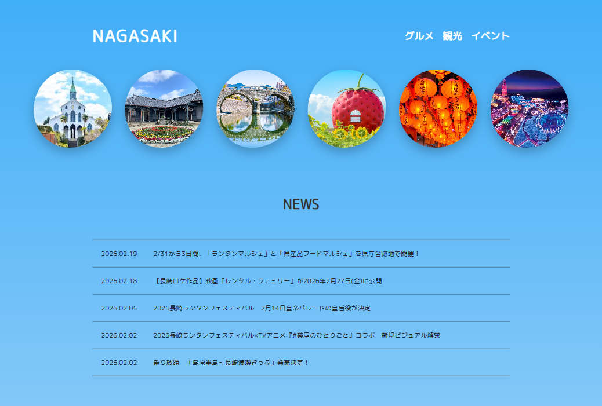
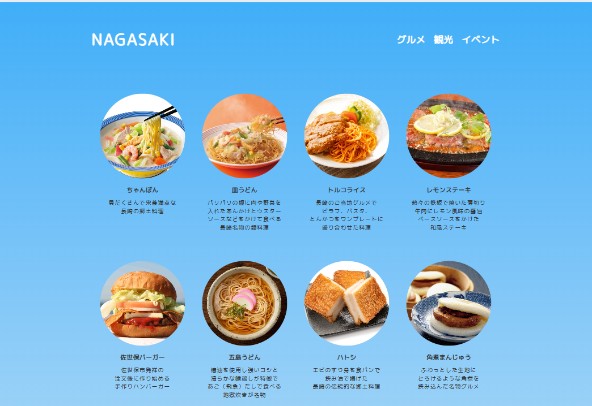
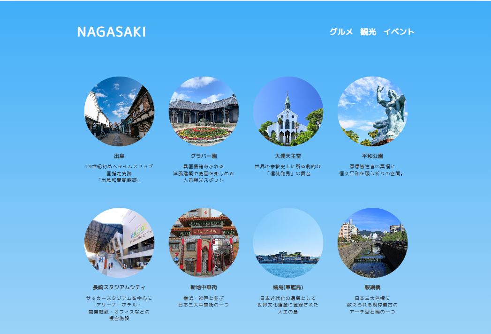
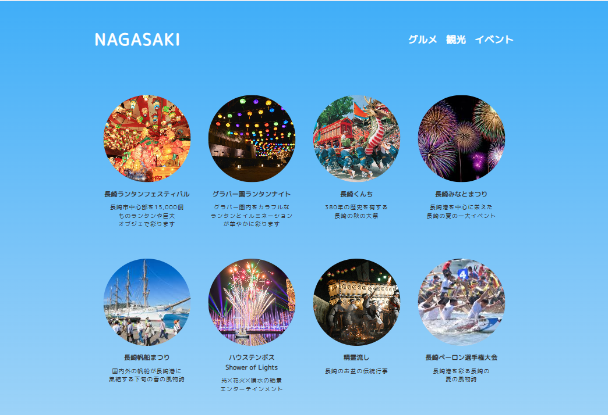

Webサイト
長崎の観光Webサイト
制作期間
約1ヶ月
作品について
長崎の観光Webサイトです。授業で学んだことを活かして、自分でデザインを考えてWebサイトを制作しました。
使用ツール
HTML / CSS / Visual Studio Code
制作の流れ
長崎の魅力を「グルメ」「観光」「イベント」の3つのテーマに分けて紹介しています。
写真選びで工夫した点は、グルメなら一番美味しそうに見えるものを選び、観光やイベントはその観光地やイベントの魅力が伝わるような、構図の綺麗な写真を配置しています。
グルメ

観光

イベント
